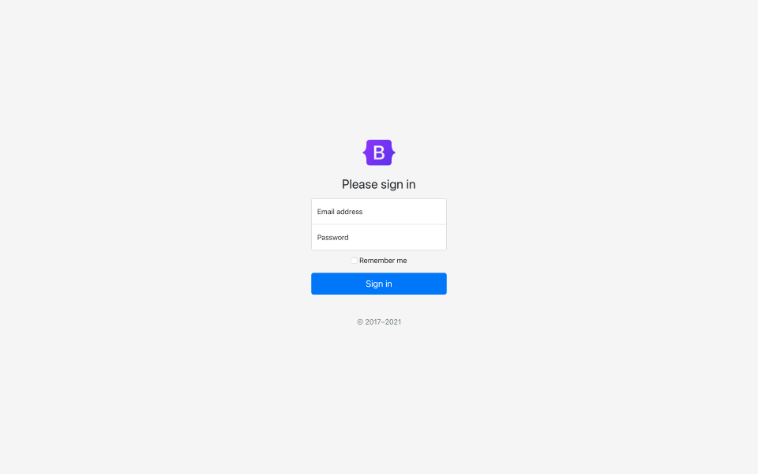

登入 · LG01 Bootstrap Sign-in · 完整官方預覽縮圖 v5.1.3 收錄來源 · 固定提交 1a6fdfae · capture build／拍攝日期未知 · 未入選封存來源：reference12 · aef3f516；原圖未改  Bootstrap Sign-in example preview，Bootstrap team and contributors，v5.1.3。文件素材 CC BY 3.0。960 × 600 原始 PNG 完整保留，未裁切、重畫、換色或翻譯。縮圖像素不是實際 CSS 尺寸。 來源、版本、授權與限制（原封存說明） 原封裝來源檔（GitHub；不是展示入口） 固定版本官方原圖 圖片署名授權 CC BY 3.0 CC BY 3.0 完整條款 保留的程式碼 MIT notice 官方文件區分 code MIT、docs CC BY 3.0；圖片按文件授權署名，不以 MIT 代替。固定來源只證明 v5.1.3 收錄此圖，不證明由該版本執行產生。最近路徑提交 f20fece3（2021-08-04，XhmikosR）亦非拍攝日期或唯一圖作者證明。 Bootstrap 原標誌只在未修改的 Bootstrap 來源參考內識別原作，不是育伴港品牌或背書；不得改標誌、作自有產品品牌或宣稱一般商標獲權。這不是登入實作，沒有表單、帳戶連接或可操作控制，未執行上游範本／CSS。